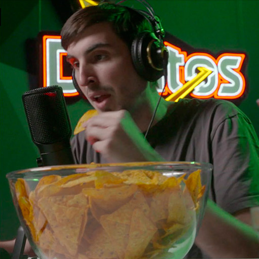

Doritos ha querido ser siempre el snack perfecto para los gamers, pero su crujido característico puede llegar a ser muy molesto en las partidas online.
De esta forma surge Crunch Cancellation, un software que permite que los gamers puedan hablar por el micrófono mientras comen, sin que se escuche ni el más mínimo crujido. A través de inteligencia artificial, desarrollada en base a una biblioteca de NVIDIA, es capaz de detectar la onda de sonido que crean los crujidos al masticar, y eliminarlos en tiempo real.

Case study
Conoce todo sobre la campaña
La tecnología
Es un software 100% real. Si tienes
una tarjeta gráfica Nvidia RTX serie 2 ó 3
descárgalo para probar su eficacia
La tecnología
Es un software 100% real. Si tienes
una tarjeta gráfica Nvidia RTX serie 2 ó 3
descárgalo para probar su eficacia